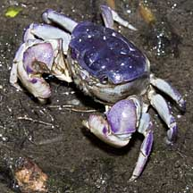
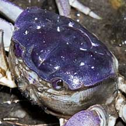
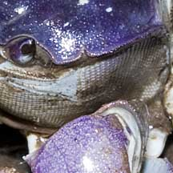

|
|
| crabs text index | photo index |
| Phylum Arthropoda > Subphylum Crustacea > Class Malacostraca > Order Decapoda > Brachyurans > Family Sesarmidae |
| Mound
crab Sarmatium germaini Family Sesarmidae updated Dec 2019 Where seen? This spherical crab is seldom seen outside the Mud lobster mounds where it lives. Features: Body width 3-8cm. It has a round body and flat legs with pointed tips. The pincers are stout and fat. What does it eat? It eats mangrove leaves, dragging these into its burrow to eat them in peace and quiet. Status and threats: This crab is listed as 'Endangered' in the Red List of threatened animals of Singapore. |
 Kranji, Feb 11 |
 |
 |
| Mound crabs on Singapore shores |
On wildsingapore
flickr
|
| Other sightings on Singapore shores |
| Acknowledgements With grateful thanks to N. Sivasothi, Ng Ngan Kee and Pei Yan for identifying this crab. Links
|